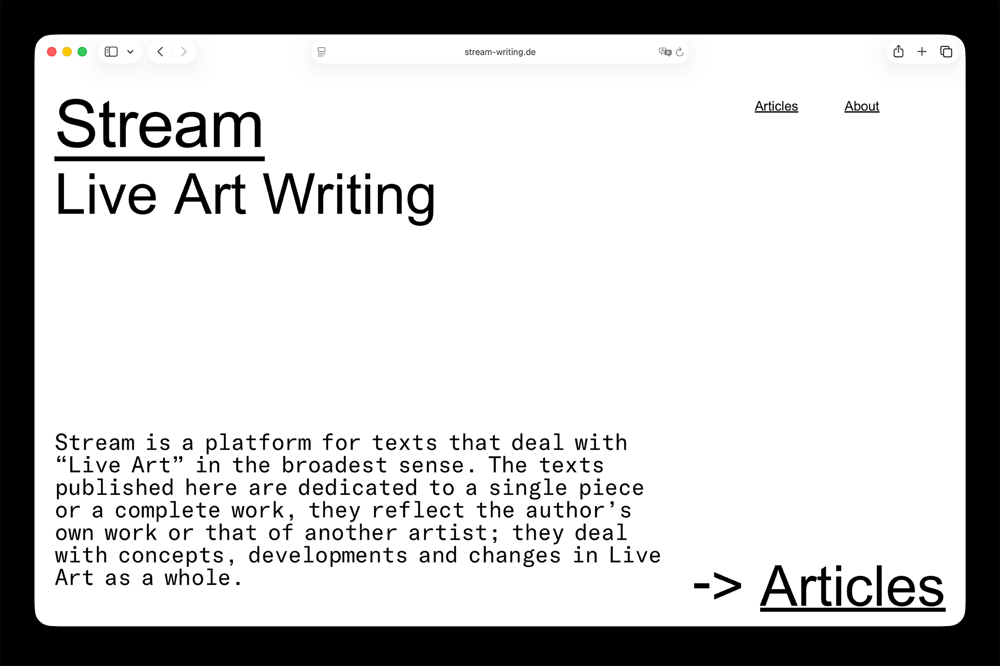
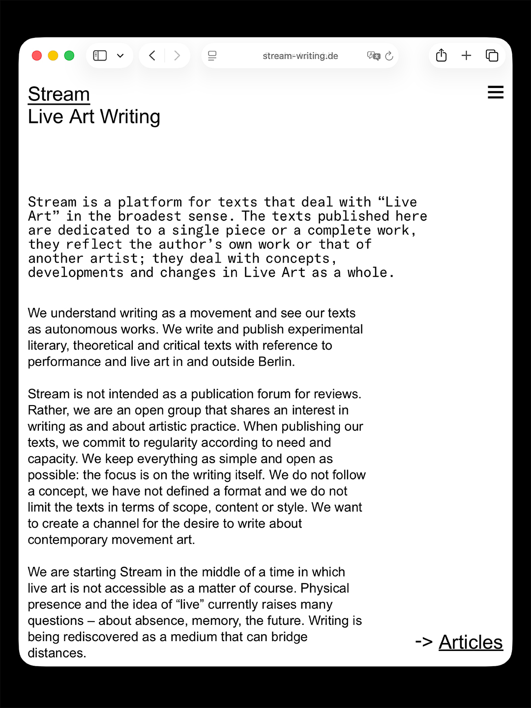
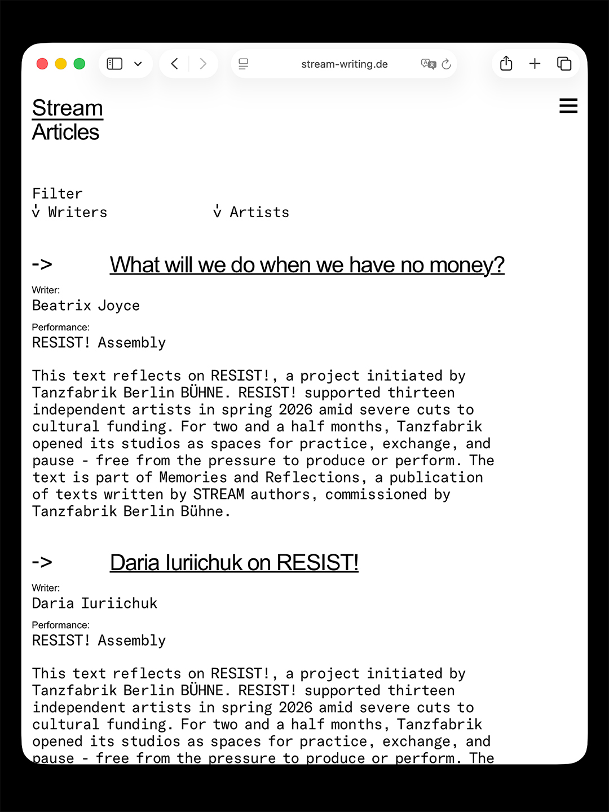
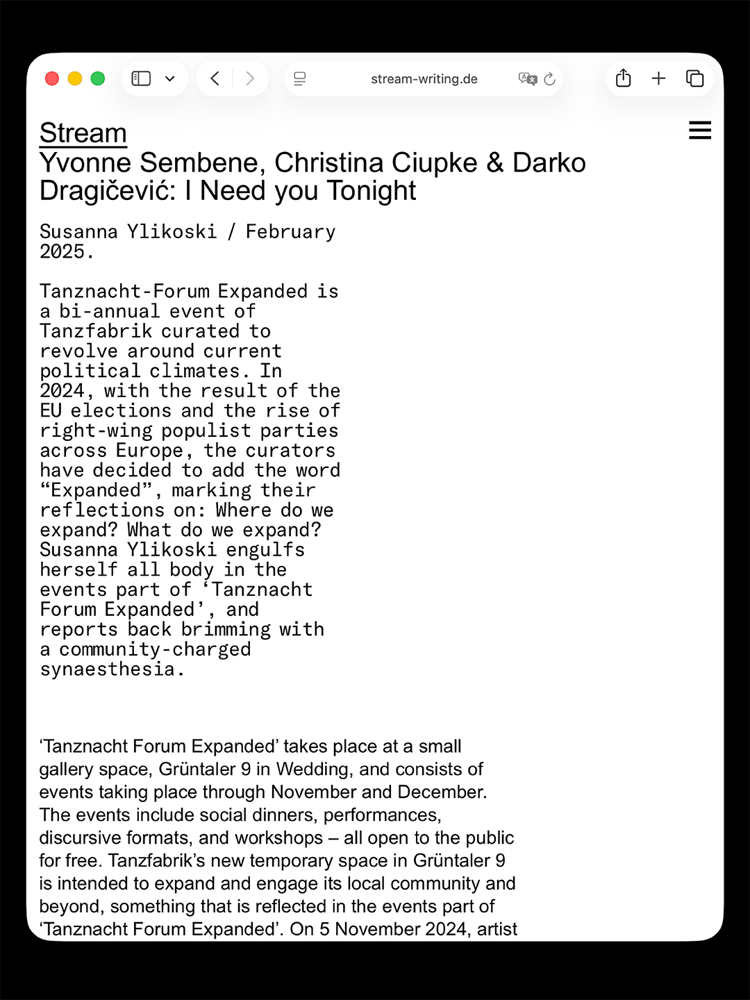
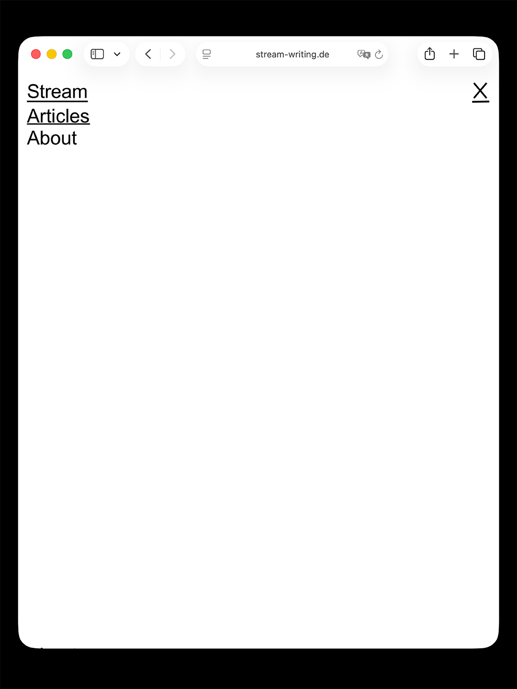
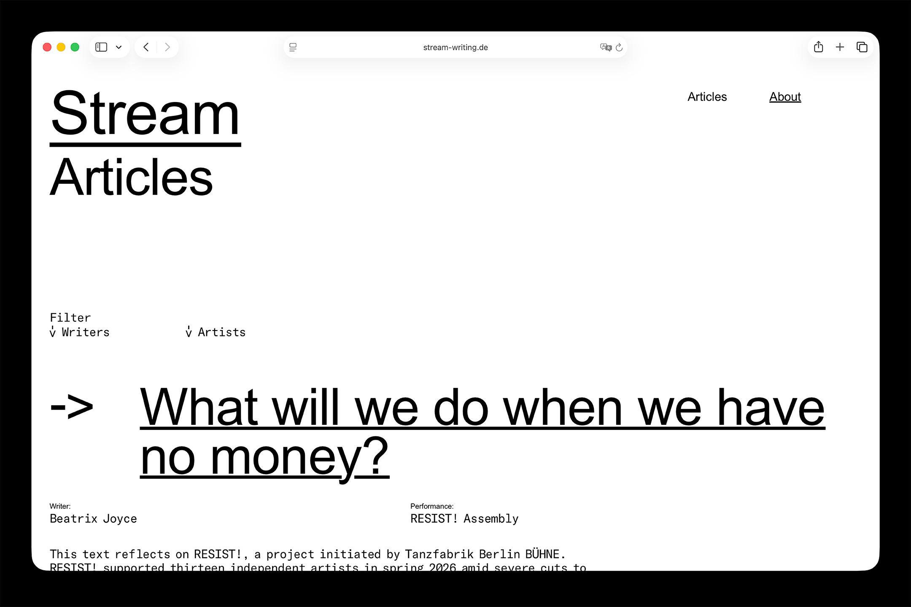
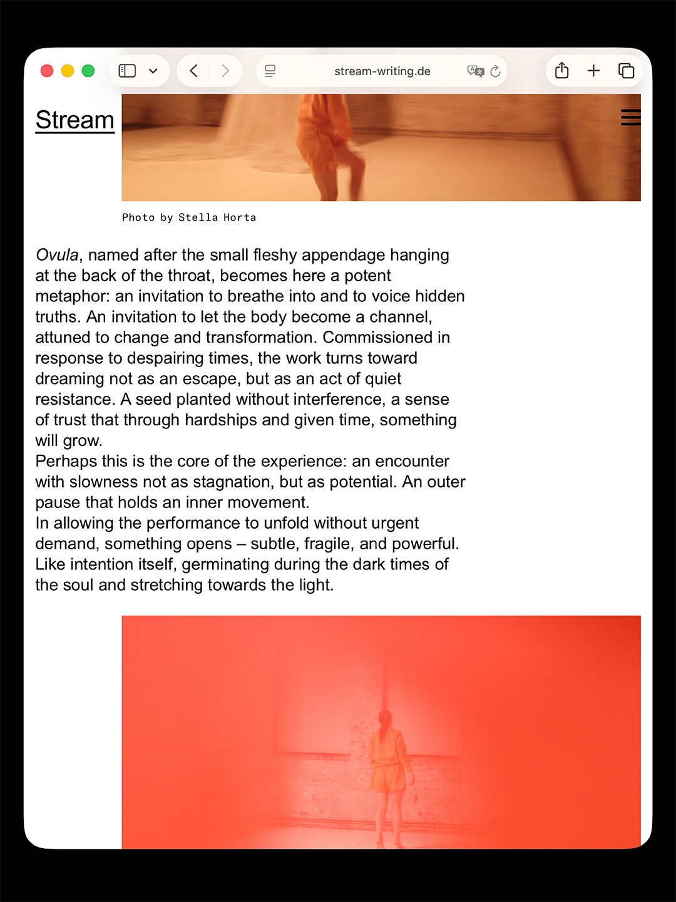
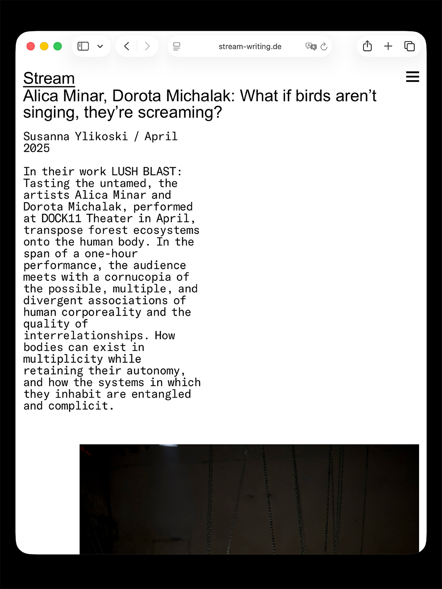
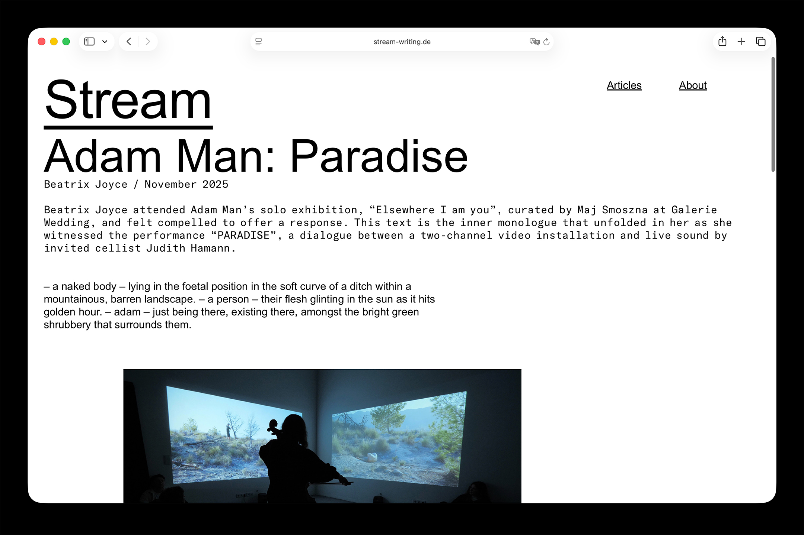

Web design for Stream - Life Art Writing. A very straightforward design for experimental literary, theoretical and critical texts related to performance and live art in and outside Berlin.








